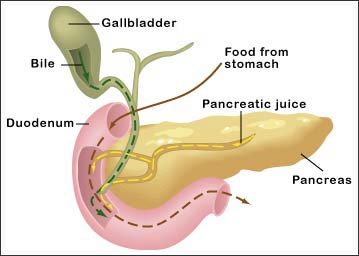

Introduction
To start your investigation, you will learn more about the production of bile and pancreatic juice in the digestive system. In the Prelab Activity, you will see the experimental design you will use in the lab and complete the plan. Then, you will answer questions about how the design of the experiment will help you determine the effects of bile and pancreatic juice on fat digestion.
Background
From the stomach, food enters the small intestine. Several chemicals that are secreted into the small intestine continue the chemical digestion of food there. Two of these chemicals, bile (made in the liver and secreted by the gallbladder) and pancreatic juice (made and secreted by the pancreas) play roles in the digestion of fat.

When fat molecules are digested, the result is molecules of glycerol and fatty acids. The presence of fatty acids can be detected with a pH indicator such as phenol red. In a basic solution, phenol red turns bright pink. In an acidic solution, phenol red turns orange. The faster a solution changes from basic to acidic, the faster the color change occurs. In this lab, you'll use phenol red to determine when milk fat is broken down, and to compare how quickly it is broken down in different samples.
Prelab Activity
You will use four test tubes as shown below. Follow the directions to plan how you will set up three of the test tubes. Then, answer the Prelab Questions.